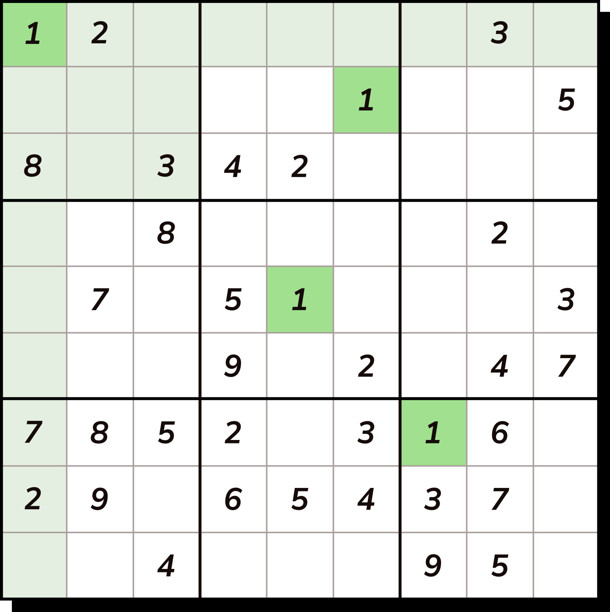

Augmented Reality Sudoku Solver

Brief: Built an augmented reality Sudoku solver using a Convolutional Neural Network (CNN) and computer vision techniques. The app captures a Sudoku grid using a camera, recognizes digits, solves the puzzle, and overlays the solution in real time.
Details
This project applies a mix of computer vision, CNN-based digit recognition, and constraint-solving techniques. A CNN model trained on the Chars74K dataset is used to classify digits within the Sudoku grid.
The main pipeline includes:
- Image preprocessing using OpenCV (grayscale conversion, thresholding, resizing)
- Grid and cell extraction using contour detection and Hough line transforms
- Digit classification with a trained CNN model using TensorFlow/Keras
- Sudoku solving via an Exact Cover algorithm
- Overlaying the solution back onto the original image
The model was trained using a cleaned and labeled subset of the Chars74K dataset. Extensive preprocessing and morphological operations were applied to ensure digits were centered, thresholded, and normalized. The final solution is rendered onto the original grid using inverse perspective transforms.
Tools Used
- Python
- OpenCV
- TensorFlow / Keras
- NumPy